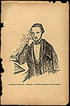
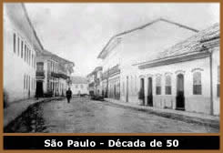

A Morte e o Mito
O domingo, 25 de abril de 1852,
se iniciara sombrio na casa do Dr. Inácio Manuel Álvares
de Azevedo, no Rio de Janeiro. Seu filho Manuel Antônio,
o Maneco, pedira à mãe, D. Maria Luísa, que
mandasse celebrar uma missa em seu quarto de doente. Sentia que,
depois de mais de 40 dias prostrado no leito, vítima de
uma série de males, que se manifestaram violentamente após
uma queda de cavalo, chegara a hora da morte - que tanto cantara
em seus versos de adolescente, apaixonado pelos delírios
macabros de Byron
e Musset.
Após se confessar ao
padre arrumado às pressas, pediu à mãe, grávida
de seu oitavo irmão, que se retirasse do quarto, pois precisava
descansar. Por volta das 4 horas da tarde, com o auxílio
do irmão Quinquim - quatro anos mais moço - ergueu-se
um pouco do leito, beijou a mão de seu pai e, a custo,
exclamou: "Que fatalidade, meu pai!"
Tentou ainda dizer algumas
palavras, mas a boca já se contraía e o corpo jazia
imóvel nos braços do irmão.
"Maneco! Maneco!..."
Gritavam Quinquim e o Dr. Inácio Manuel.
Do quarto ao lado, D. Maria
Luísa, ouvindo e entendendo, soltou um grito desesperado
e desfaleceu.
No enterro, discursou o parente
Joaquim Manuel de Macedo, médico, professor e já
um dos mais importantes e populares romancistas do Brasil, autor
de A Moreninha (1844). Entre outros elogios, afirmava
que "Deus tinha acendido na alma do mancebo aquele fogo
sagrado da poesia, que eleva o homem acima da terra e faz correr
de seus lábios, em cânticos sonoros, a linguagem
do inspirado".
No
dia 27 de abril, o Correio Mercantil, jornal onde então
trabalhava Manuel Antônio de Almeida, publicou, na primeira
página, uma nota em que se lia: "Nesse jovem,
perdeu o Brasil um de seus mais esperançosos filhos, um
coração patriótico e dedicado, um poeta cujos
vôos deviam elevar-se a grandes alturas, um advogado que
prometia em breve conhecer todos os arcanos das ciências
jurídicas, pois que ainda no fervor dos anos já
lhe eram igualmente familiares os poetas e literatos da Itália,
da Alemanha, da França e da Inglaterra, assim como os escritos
dos mais abalizados jurisconsultos e publicistas."
Quase um mês depois,
a 22 de maio, em São Paulo, a sociedade acadêmica
a que Maneco pertencia, o Ensaio Filosófico Paulistano,
realizava uma sessão fúnebre em sua homenagem, presidida
por Amaral Gurgel. Nos vários discursos e poemas apresentados,
"gênio" é a palavra mais usada para caracterizá-lo.
Ao morrer, Manuel
Antônio Álvares de Azevedo havia publicado apenas
alguns poemas e discursos em revistas acadêmicas de circulação
restrita aos estudantes de Direito de São Paulo. Já
era, no entanto, considerado, por aqueles que o conheciam, uma
grande esperança poética e intelectual.
A sua morte, antes que chegasse
a completar o vigésimo primeiro aniversário, privou-nos,
nas palavras de José Veríssimo, "daquele que
seria talvez o máximo poeta brasileiro". Seria...
Talvez... O certo é que a morte jovem criou, como sempre,
um mito. O mito do gênio doente e mórbido, que previra
a própria morte em "Se
Eu Morresse Amanhã":
"Quanta
glória pressinto em meu futuro!
Que aurora de porvir e que manhã!
Eu perdera chorando
essas coroas
Se eu morresse amanhã!"
Vida
breve: vida louca?
"Nada que é tudo",
todo mito é enigmático. A tão curta vida
de Álvares de Azevedo é fonte de inúmeras
polêmicas entre seus biógrafos. Discute-se desde
o local onde teria nascido, até a causa médica de
sua morte. Principalmente, polemiza-se em torno da sua conduta
quando estudante em São Paulo. Libertino devasso ou estudante
recatado? Vamos aos fatos que parecem certos.
Sabe-se
que o autor da Lira
dos Vinte Anos nasceu no dia 12 de setembro de 1831,
em São Paulo, onde seu pai era ainda quintanista da Faculdade
de Direito. Tudo indica que teria nascido na biblioteca da casa
do avô, embora haja uma lenda de que o parto teria ocorrido
na biblioteca da própria Faculdade de Direito. De qualquer
modo, Álvares de Azevedo teria nascido como, de resto,
passaria toda a vida: entre livros.
Formado, seu pai se transfere
para a capital, o Rio de Janeiro, iniciando logo brilhante carreira
jurídica. Aos quatro anos de idade, Maneco depara-se, pela
primeira vez, com a morte. O falecimento de seu irmãozinho,
Manuel Inácio, deixa marcas profundas sobre o jovem sensível.
Alguns biógrafos atribuem ao choque com a morte do irmão
uma febre que o domina entre os cinco e os seis anos, quase o
mata, e que o deixaria debilitado pelo resto da vida. Certamente
o poema O Anjinho, da Lira dos Vinte Anos, traduz,
anos depois, a forte impressão que o episódio lhe
causou:
"Não
chorem! lembro-me ainda
Como
a criança era linda
No frescor
da facezinha!
Com seus
lábios azulados,
Com os seus olhos vidrados
Como de morta andorinha!"
Ainda adoentado, inicia-se
nos estudos com pouco brilho. Ingressa, aos nove anos, no Colégio
Stoll, onde logo se destaca, sendo considerado, pelo professor
Stoll, "o melhor dos alunos, pela inteligência,
pelo espírito, pela amável alegria e, principalmente,
pela bondade".
Terminado o primário,
já fala francês e inglês e ingressa no célebre
Colégio Dom Pedro II para cursar o ginásio. Lá,
aprende o alemão, o grego e o latim e tem aulas de filosofia
com o poeta Gonçalves de Magalhães, introdutor do
romantismo no Brasil. Sempre enfrentando problemas de saúde,
recebe com menção honrosa, em 1847, o título
de Bacharel em Letras, o equivalente, hoje em dia, ao diploma
do Segundo Grau.
Em 1848, ingressa na Academia
de Ciências Jurídicas de São Paulo. A partir
da sua transferência para a capital paulista até
a sua morte, em férias, no Rio de Janeiro, a história
se mistura com a lenda e fica difícil distinguir o homem
do mito.
Nas suas cartas à família
e aos amigos cariocas, assim como na peça Macário,
Maneco revela um imenso tédio em morar na pequena "cidade
colocada na montanha, envolta de várzeas relvosas"
com
"ladeiras íngremes e ruas péssimas",
nas quais "era raro o minuto em que não se esbarrasse
a gente com um burro ou com um padre". A capital paulista
era, então, habitada por não mais de 15 mil pessoas,
que viviam escandalizadas com as aventuras devassas de uma sociedade
secreta de estudantes, fundada em 1845, conhecida como Sociedade
Epicuréia. Seus membros, alunos da Academia, chamavam-se
uns aos outros pelos nomes de personagens do Lord Byron e tinham,
como objetivo principal, colocar em prática as "extravagantes
fantasias" do poeta inglês. Realizavam orgias intermináveis
e, diz a lenda, cerimônias macabras nos cemitérios
paulistanos.
Chegando a essa São
Paulo, Álvares de Azevedo trava logo amizade com dois poetas
estudantes, notórios boêmios, Aureliano Lessa e o
futuro romancista Bernardo
Guimarães. Juntos, planejam publicar um livro de versos,
intitulado As Três Liras.
Introvertido, estudioso, Álvares
de Azevedo leu com avidez e produziu vertiginosamente durante
os quatro anos de Faculdade. Escreveu os poemas reunidos nos livros
Lira dos Vinte Anos e Poesias Diversas; os poemas
longos O Poema do Frade e O Conde Lopo; o drama
Macário; as narrativas de Noite
na Taverna e O Livro de Fra. Gondicário;
quase uma centena de páginas de estudos literários;
alguns discursos acadêmicos e ainda incontáveis cartas
pessoais enviadas ao Rio de Janeiro.
Ficaria muito difícil,
portanto, a um trabalhador tão incansável, de saúde
sempre abalada, ter-se misturado com freqüência às
orgias sucessivas e aos excessos dos companheiros boêmios,
menos dedicados à literatura e ao estudo. Vida louca? Certamente
a dos que o cercavam. A de Maneco parece, aos estudiosos mais
sérios, ter se passado fundamentalmente entre os livros
e os sonhos.
Duas mortes marcaram profundamente
o poeta nos seus últimos anos de vida. Em setembro de 1850,
o quintanista Feliciano Coelho Duarte comete o suicídio.
Em setembro de 1851, morre seu amigo João Batista da Silva
Pereira Júnior. No discurso fúnebre do amigo, Álvares
de Azevedo diria: "Cada ano uma vítima se perde
nas ondas, e a sorte escolhe sorrindo os melhores dentre nós".
No seu quarto de pensão,
compõe um poema dedicado ao amigo e escreve na parede:
1850 - Feliciano Coelho Duarte
1851 - João Batista da Silva Pereira
1852 - ...
Entre os anos letivos de 1851
e 52, vai passar as férias com a família. Passeando
a cavalo, a conselho médico, com seu cão Fiel pelas
ruas do Rio de Janeiro, para amenizar os sintomas da tuberculose
que o afligia, sofre uma queda. Após uma operação,
segundo a família, sem anestesia, para a remoção
de um tumor na fossa ilíaca - provavelmente uma apendicite
supurada - e depois de 46 dias de agonia, deixa a vida para virar
lenda.